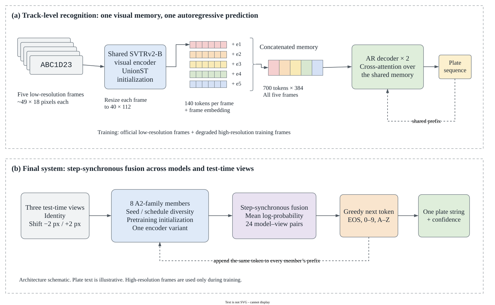
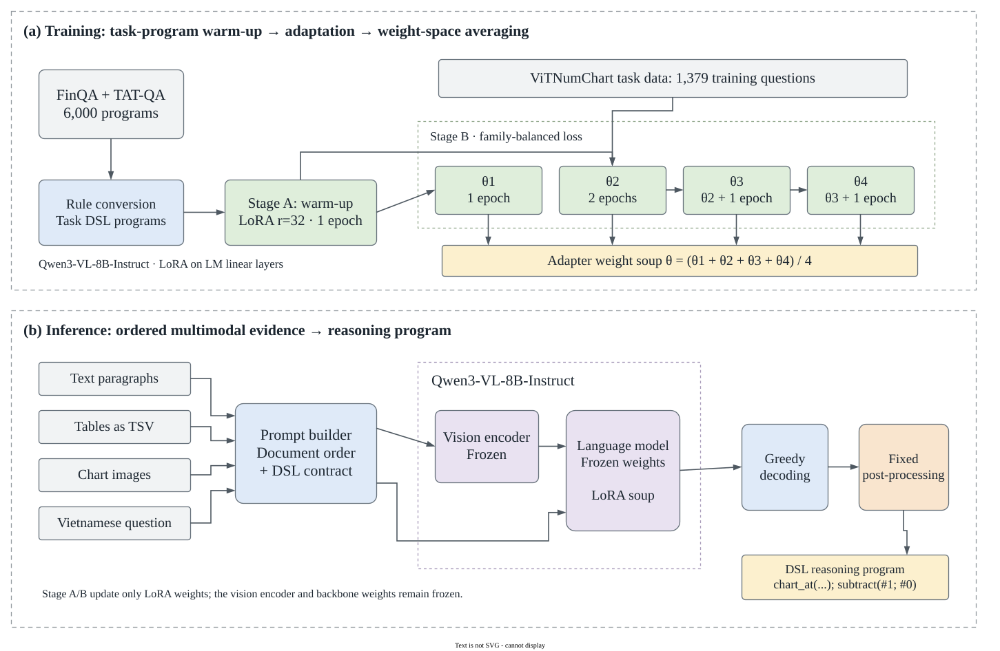

BASED IN HO CHI MINH CITY, VIETNAM
AI ENGINEER & MULTIMODAL RESEARCH
Cao Lê
Minh Khoa.
I’m an AI engineer working across practical systems, vision-language reasoning and efficient inference. I care about how an idea becomes a useful, well-evaluated system.
From evidence-backed AI workflows
to efficient visual intelligence.
Seeing the scene.
Reasoning about the object.
Explore MonoLaDN ↗ABOUT
AI engineering.
Across research and practice.
I study Computer Science at HCMUT. My work spans industry systems, academic research, personal projects and AI challenges, with a focus on multimodal reasoning and efficient inference.
Full CV ↗CAREER
The journey so far.
Fizo
AI engineering & infrastructure
JUN — AUG 2026EyeCode Tech
VLA inference research
JUL 2026 — PRESENTAgileMark
Enterprise AI systems
Roles overlap in time. The full timeline keeps each role’s dates explicit.
SELECTED WORK
Explore my work.
Research, industry experience,
personal projects and challenges.
All work · 5 entries
 Original paper · Figure 3
Original paper · Figure 3MonoLaDN
VLM-based 3D reasoning generation for monocular object detection.
ACCV 2026 · Accepted Method illustration
Method illustrationRFI & compliance intelligence
An enterprise AI platform connecting requirements, evidence and human review.
AgileMark · 2026 Method illustration
Method illustrationAI customer support
Zalo OA automation with grounded responses and a human fallback.
Fizo · 2025–present
Draw.io architectureMulti-frame plate recognition
A post-competition study of low-resolution recognition across five frames.
LRLPR-26 · Post-competition
Draw.io architectureViTNumChart
Program-based reasoning over Vietnamese financial text, tables and charts.
VLSP 2026 · Shared task¹ ViTNumChart ranks are recorded in the project repository. LRLPR is a post-competition evaluation and has no official placement.
No self projects to share yet.
CONTACT